从2026到2126，人类将经历可控核聚变、脑机接口、量子计算、火星殖民、数字永生与星际旅行。这是一场穿越百年的沉浸式未来之旅。
七大技术突破，重塑人类文明
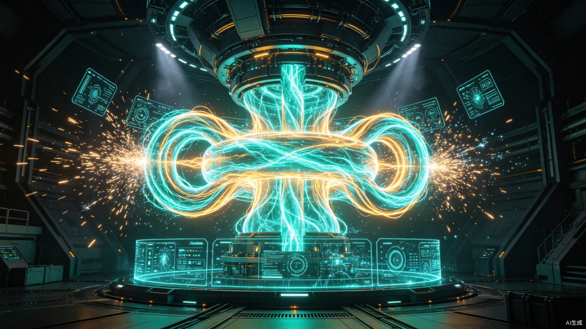
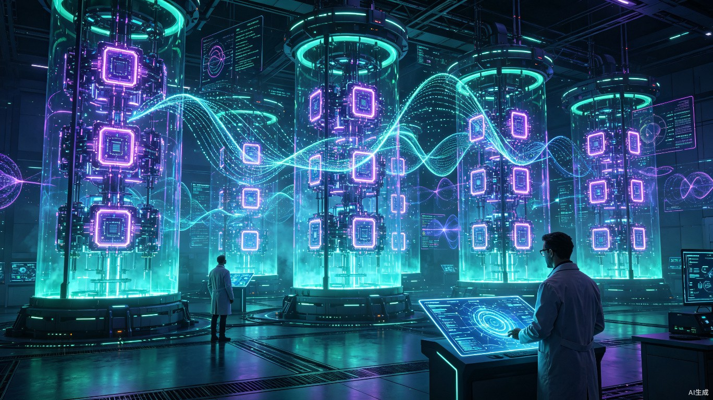
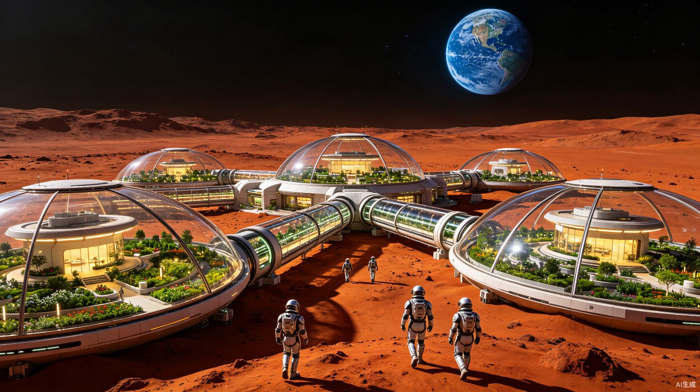
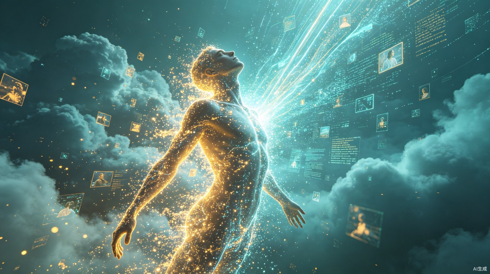
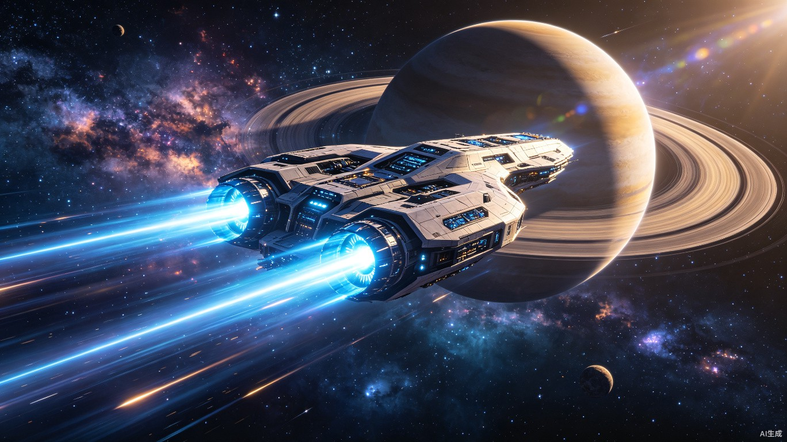
穿越到未来，体验百年后人类的日常生活
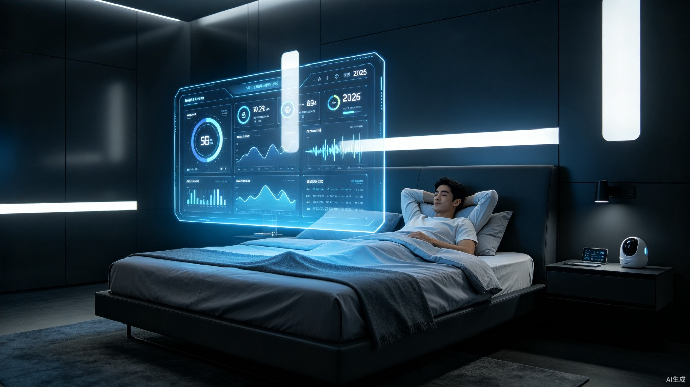
全息投影屏幕从天花板缓缓降下，AI管家"晨曦"用柔和的声音唤醒你。它已经分析了你昨晚的睡眠数据、体温变化和脑波活动，为你定制了今天的健康方案。空气中弥漫着由分子合成器释放的提神香氛。
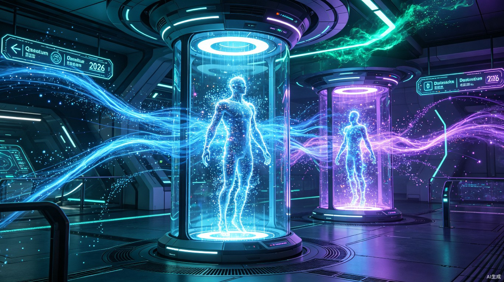
走进量子传输舱，身体在一瞬间被分解为量子态信息，跨越数千公里后在目的地重组。整个过程不到3秒，你从上海的家中直接传送到了月球科研基地的办公室。通勤已成为历史名词。
脑机接口自动连接到全息工作台，你通过思维直接操控三维数据模型。与火星团队的虚拟会议中，每个人以全息投影的形式出现。创意和想法在脑际网络中实时共享，工作效率是人类时代的100倍。
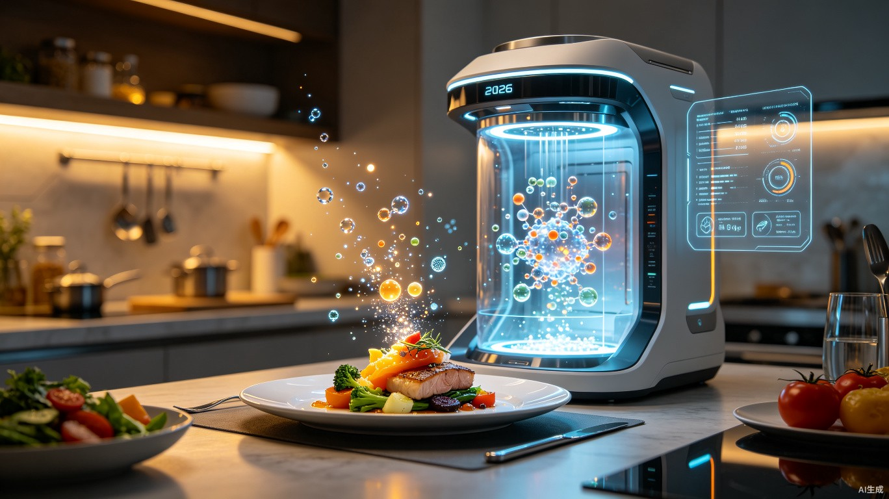
午餐不再需要烹饪。分子合成器根据你的营养需求和口味偏好，在30秒内从基本分子层面组装出完美的料理。今天的菜单是"分子法式鹅肝配量子蓝莓酱"——味道与顶级餐厅完全一致，营养却经过精确计算。
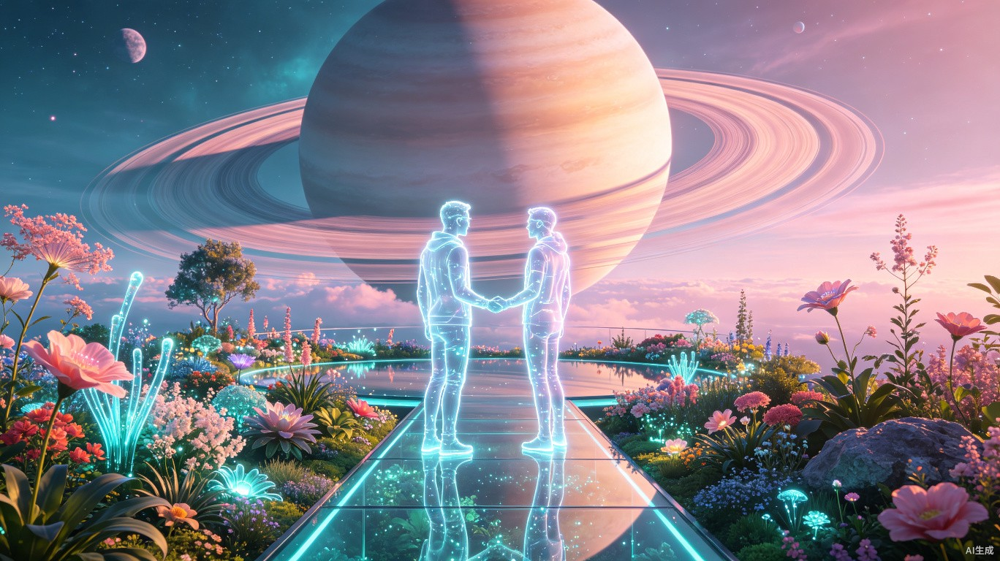
进入虚拟社交空间，你选择了一个漂浮在土星环上的花园场景。朋友们从地球、火星和太空站以全息投影的形式相聚。你们在虚拟花园中散步聊天，感受着模拟的微风和花香，距离不再是社交的障碍。
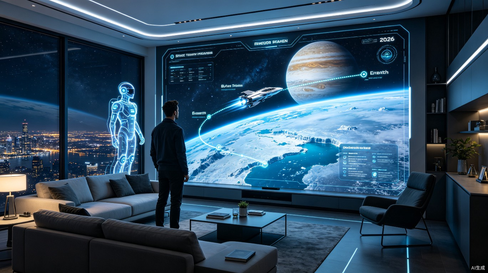
睡前，你在全息屏幕上规划下个月的太空旅行。这次的目的地是木星的欧罗巴海洋世界。AI旅行助手为你推荐了最佳航线和体验项目：深海潜水、冰层徒步和外星生物观察。太空旅行已成为2126年最流行的度假方式。
2126年改变人类生活的核心技术
无限清洁能源，终结化石燃料时代，为所有技术突破提供能源基础
思维操控数字世界，信息获取效率提升千倍，人机融合的新纪元
情感理解与自主决策，重新定义家庭与陪伴，人机共生新范式
百万量子比特，药物研发从10年到1天，计算能力指数级跃升
穹顶城市自给自足，地球-火星航班常态化，多星球物种时代
意识完整上传，突破生物学限制，生死边界被重新定义
曲速引擎突破光速限制，阿尔法半人马座探索启动，银河纪元开启
精准基因编辑消除遗传疾病，人类平均寿命突破150岁，定制化健康方案
选择你心中的未来方向，探索不同的人类命运
输入你的信息，AI为你推演2126年的生活
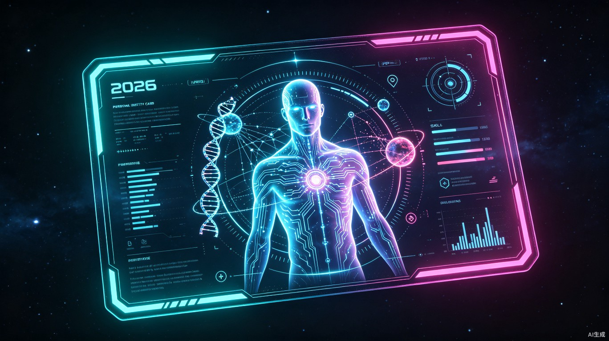